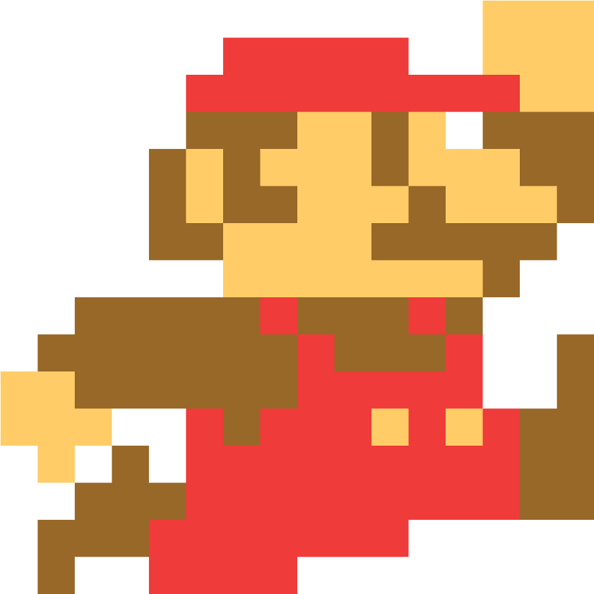
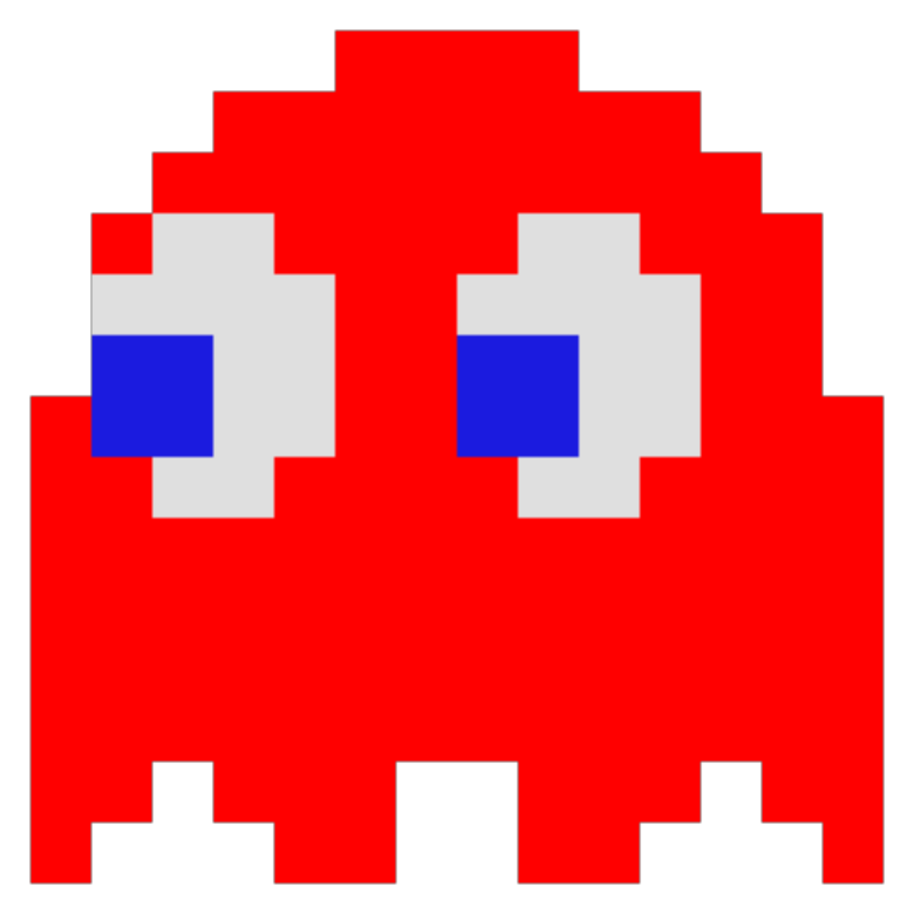

I det här spelet utforskade jag video effekter på kameran och ville göra designen själv. Jag är inte riktigt klar med spelet men målet var att skapa en annan känsla. Jag har ändrat både synfältet och lensförvrängningen. Sen ändrade jag färgen och la till en vinjett. Man kan gå runt med WASD och kolla runt med musen.

I det här spelet ville jag skapa känslan av att man kollade ner på en liten miljö med massa löv, bladlöss och en nyckelpiga. Jag gillade idén med att ha en nyckelpiga som ska försöka äta upp så många bladlöss som möjligt. Jag behövde även jobba med animationer vilket jag tyckte var kul.
Det här spelet gjorde jag för väldigt länge sen och det var främst för att kunna lägga upp ett spel på min pappas hemsida. Då hade jag ingen aning om hur man använde html, css och javascript men nu känns det som att jag utvecklats jättemycket och vet faktiskt hur man gör.
